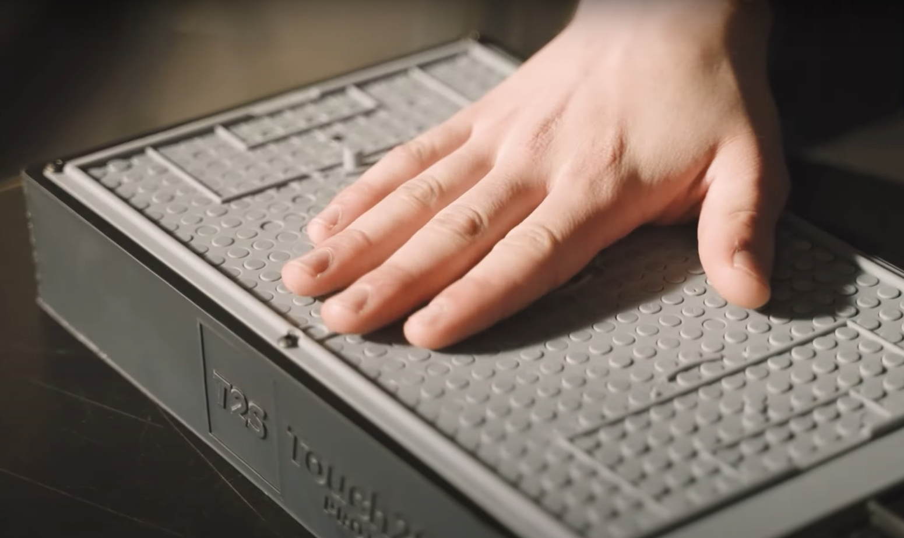
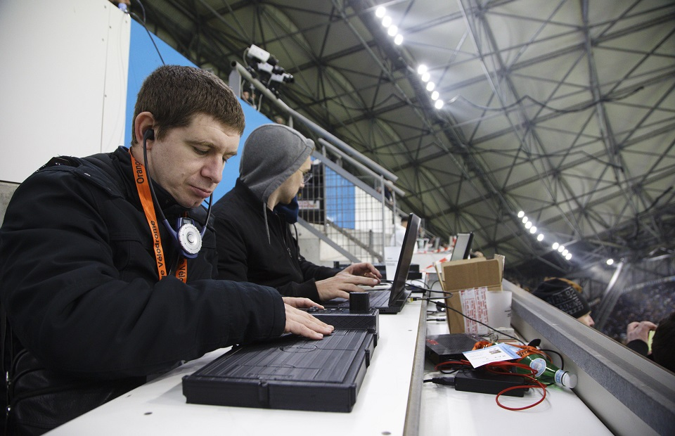

En la última edición del MWC de Barcelona Orange presentó esta aplicación pensada para personas invidentes o con discapacidad visual puedan disfrutar de la sensación de los deportes a través de una tableta táctil. Esta fue creada por un emprendedor francés y desarrollada en colaboración con Orange.
Se trata de un dispositivo que permite a las personas ciegas o con problemas visuales seguir un partido de fútbol al máximo. Utilizando un sistema con IA, Edge computing y 5G touch2see es una especie de tablet que muestra una miniatura de la forma del campo deportivo.
Una serie de pivotes en movimiento permiten al usuario saber la posición de los jugadores y la pelota a tiempo real respondiendo a los movimientos del campo de juego. Además los pivotes poseen distintos niveles de vibración para que su intensidad sea proporcional a la acción del campo. También puedes encontrar una audiodescripción automática para el tiempo de juego, marcador o faltas.
Para poder trasmitir los movimientos en tiempo real utiliza unas cámaras dotadas de IA que se encuentran esparcidas por todo el estadio y se conectan por la red de Orange al dispositivo. Gracias a esto es posible recopilar, analizar y procesar toda la información que llega a la tableta táctil junto a la del sistema de audiodescripción.
Por el momento solo ha sido aplicado al fútbol pero su sistema ha sido desarrollado para que más adelante pueda implementarse en partidos de tenis, rugby y baloncesto. A pesar de esto a más largo plazo se cree que podría llegar a ser compatible con más de 15 deportes distintos.
Tras las númerosas pruebas realizadas en un campo de fútbol los creadores han determinado que su próxima meta en el desarrollo de touch2see será el poder integrar en el sistema los estadios de los Juegos Olímpicos y paralímpicos 2024 que se celebrarán en París.
Tristemente a pesar de todo el desarrollo y pruebas en campos de juego ya realizadas este dispositivo sigue siendo tan solo un prototipo por lo que por el momento no sabemos cuando saldrá a la venta pero sabemos que todos los tester que probaron el dispositivo en el Orange Velodrome, dónde se llevaron acabo las pruebas en vivo, quedaron encantados con su uso por lo que esperamos que esta fecha se encuentre antes de lo esperado.